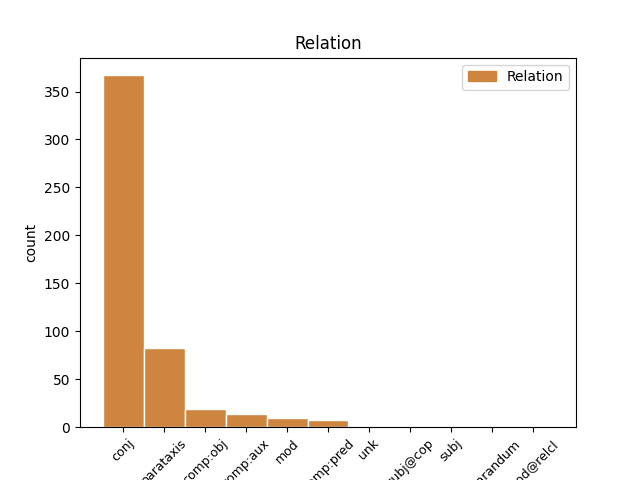
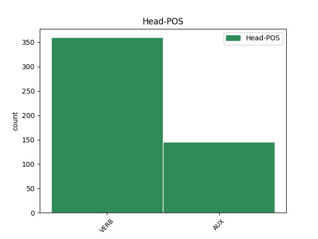
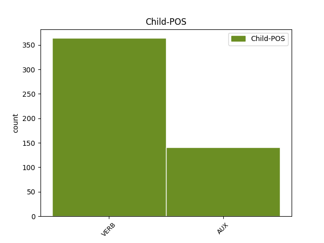

Distribution of features within this leaf



Agreement Rules sorted by frequency.
- When the dependent token is the conjunct(conj) of the head token,
1 Garantii _ _ _ _ 0 _ _ _
2 on _ _ _ _ 0 _ _ _
3 ilmselt _ _ _ _ 0 _ _ _
4 selle _ _ _ _ 0 _ _ _
5 pärast _ _ _ _ 0 _ _ _
6 välja _ _ _ _ 0 _ _ _
7 mõeldud _ _ _ _ 0 _ _ _
8 et _ _ _ _ 0 _ _ _
9 100 _ _ _ _ 0 _ _ _
10 % _ _ _ _ 0 _ _ _
11 kvaliteeti _ _ _ _ 0 _ _ _
12 ei _ _ _ _ 0 _ _ _
13 taga tagama VERB V Connegative=Yes|Mood=Ind|Tense=Pres|VerbForm=Fin|Voice=Act 0 _ _ _
14 keegi _ _ _ _ 0 _ _ _
15 , _ _ _ _ 0 _ _ _
16 ega _ _ _ _ 0 _ _ _
17 suuda suutma VERB V Connegative=Yes|Mood=Ind|Tense=Pres|VerbForm=Fin|Voice=Act 13 conj _ _
18 välistada _ _ _ _ 0 _ _ _
19 väiksemaid _ _ _ _ 0 _ _ _
20 defekte _ _ _ _ 0 _ _ _
21 toodetel _ _ _ _ 0 _ _ _
22 , _ _ _ _ 0 _ _ _
23 mis _ _ _ _ 0 _ _ _
24 kasutades _ _ _ _ 0 _ _ _
25 esile _ _ _ _ 0 _ _ _
26 tulevad _ _ _ _ 0 _ _ _
27 .. _ _ _ _ 0 _ _ _
28 isegi _ _ _ _ 0 _ _ _
29 see _ _ _ _ 0 _ _ _
30 puuvilja _ _ _ _ 0 _ _ _
31 firma _ _ _ _ 0 _ _ _
32 mitte _ _ _ _ 0 _ _ _
33 , _ _ _ _ 0 _ _ _
34 rääkimata _ _ _ _ 0 _ _ _
35 pesumasina _ _ _ _ 0 _ _ _
36 firmast _ _ _ _ 0 _ _ _
37 . _ _ _ _ 0 _ _ _
1 ma _ _ _ _ 0 _ _ _
2 spets _ _ _ _ 0 _ _ _
3 lõpetasin lõpetama VERB V Mood=Ind|Number=Sing|Person=1|Tense=Past|VerbForm=Fin|Voice=Act 0 _ _ _
4 ülejäänud _ _ _ _ 0 _ _ _
5 jutu _ _ _ _ 0 _ _ _
6 sirvimise _ _ _ _ 0 _ _ _
7 ja _ _ _ _ 0 _ _ _
8 seost _ _ _ _ 0 _ _ _
9 ikka _ _ _ _ 0 _ _ _
10 ei _ _ _ _ 0 _ _ _
11 leidnud _ _ _ _ 0 _ _ _
12 - _ _ _ _ 0 _ _ _
13 üks _ _ _ _ 0 _ _ _
14 ütleb ütlema VERB V Mood=Ind|Number=Sing|Person=3|Tense=Pres|VerbForm=Fin|Voice=Act 3 parataxis _ _
15 et _ _ _ _ 0 _ _ _
16 levi _ _ _ _ 0 _ _ _
17 kehv _ _ _ _ 0 _ _ _
18 ja _ _ _ _ 0 _ _ _
19 siis _ _ _ _ 0 _ _ _
20 vastuseks _ _ _ _ 0 _ _ _
21 " _ _ _ _ 0 _ _ _
22 selliset _ _ _ _ 0 _ _ _
23 ja _ _ _ _ 0 _ _ _
24 muude _ _ _ _ 0 _ _ _
25 jamade _ _ _ _ 0 _ _ _
26 pärast _ _ _ _ 0 _ _ _
27 . _ _ _ _ 0 _ _ _
28 . _ _ _ _ 0 _ _ _
29 . _ _ _ _ 0 _ _ _
30 . _ _ _ _ 0 _ _ _
31 " _ _ _ _ 0 _ _ _
1 Tormates _ _ _ _ 0 _ _ _
2 põlevasse _ _ _ _ 0 _ _ _
3 majja _ _ _ _ 0 _ _ _
4 nad _ _ _ _ 0 _ _ _
5 teavad teadma VERB V Mood=Ind|Number=Plur|Person=3|Tense=Pres|VerbForm=Fin|Voice=Act 0 _ _ _
6 , _ _ _ _ 0 _ _ _
7 mis _ _ _ _ 0 _ _ _
8 teha _ _ _ _ 0 _ _ _
9 tuleb tulema VERB V Mood=Ind|Number=Sing|Person=3|Tense=Pres|VerbForm=Fin|Voice=Act 5 comp:obj _ SpaceAfter=No
10 , _ _ _ _ 0 _ _ _
11 et _ _ _ _ 0 _ _ _
12 olukord _ _ _ _ 0 _ _ _
13 kontrolli _ _ _ _ 0 _ _ _
14 alla _ _ _ _ 0 _ _ _
15 saada _ _ _ _ 0 _ _ _
16 . _ _ _ _ 0 _ _ _
1 Mõnikord _ _ _ _ 0 _ _ _
2 ka _ _ _ _ 0 _ _ _
3 teiste _ _ _ _ 0 _ _ _
4 inimeste _ _ _ _ 0 _ _ _
5 kannatus _ _ _ _ 0 _ _ _
6 katkeb _ _ _ _ 0 _ _ _
7 ja _ _ _ _ 0 _ _ _
8 nad _ _ _ _ 0 _ _ _
9 lihtsalt _ _ _ _ 0 _ _ _
10 nähvavad _ _ _ _ 0 _ _ _
11 : _ _ _ _ 0 _ _ _
12 ära ära AUX V Mood=Ind|Polarity=Neg|Tense=Pres|VerbForm=Fin|Voice=Act 0 _ _ _
13 hädalda hädaldama VERB V Connegative=Yes|Mood=Ind|Tense=Pres|VerbForm=Fin|Voice=Act 12 comp:aux _ SpaceAfter=No
14 , _ _ _ _ 0 _ _ _
15 saa _ _ _ _ 0 _ _ _
16 üle _ _ _ _ 0 _ _ _
17 ! _ _ _ _ 0 _ _ _
1 ja _ _ _ _ 0 _ _ _
2 kui _ _ _ _ 0 _ _ _
3 saab _ _ _ _ 0 _ _ _
4 tugeva _ _ _ _ 0 _ _ _
5 löögi _ _ _ _ 0 _ _ _
6 nurka _ _ _ _ 0 _ _ _
7 siis _ _ _ _ 0 _ _ _
8 on olema AUX V Mood=Ind|Number=Sing|Person=3|Tense=Pres|VerbForm=Fin|Voice=Act 0 _ _ _
9 ekraan _ _ _ _ 0 _ _ _
10 totaalselt _ _ _ _ 0 _ _ _
11 puru _ _ _ _ 0 _ _ _
12 , _ _ _ _ 0 _ _ _
13 samas _ _ _ _ 0 _ _ _
14 kui _ _ _ _ 0 _ _ _
15 tavalisel _ _ _ _ 0 _ _ _
16 klaasile _ _ _ _ 0 _ _ _
17 võib võima AUX V Mood=Ind|Number=Sing|Person=3|Tense=Pres|VerbForm=Fin|Voice=Act 8 mod _ _
18 teha _ _ _ _ 0 _ _ _
19 vaid _ _ _ _ 0 _ _ _
20 ühe _ _ _ _ 0 _ _ _
21 pooliku _ _ _ _ 0 _ _ _
22 prao _ _ _ _ 0 _ _ _
23 , _ _ _ _ 0 _ _ _
24 kui _ _ _ _ 0 _ _ _
25 sedagi _ _ _ _ 0 _ _ _
26 . _ _ _ _ 0 _ _ _
1 Võibolla _ _ _ _ 0 _ _ _
2 liiga _ _ _ _ 0 _ _ _
3 hommik _ _ _ _ 0 _ _ _
4 ja _ _ _ _ 0 _ _ _
5 ma _ _ _ _ 0 _ _ _
6 ei _ _ _ _ 0 _ _ _
7 saa saama VERB V Connegative=Yes|Mood=Ind|Tense=Pres|VerbForm=Fin|Voice=Act 0 _ _ _
8 päris _ _ _ _ 0 _ _ _
9 täpselt _ _ _ _ 0 _ _ _
10 pihta _ _ _ _ 0 _ _ _
11 millise _ _ _ _ 0 _ _ _
12 seose _ _ _ _ 0 _ _ _
13 eelneva _ _ _ _ 0 _ _ _
14 lugemine _ _ _ _ 0 _ _ _
15 andma _ _ _ _ 0 _ _ _
16 pidi pidama AUX V Mood=Ind|Number=Sing|Person=3|Tense=Past|VerbForm=Fin|Voice=Act 7 comp:pred _ _
1 Ei _ _ _ _ 0 _ _ _
2 hakka _ _ _ _ 0 _ _ _
3 pikemalt _ _ _ _ 0 _ _ _
4 kirjutama _ _ _ _ 0 _ _ _
5 , _ _ _ _ 0 _ _ _
6 kelle _ _ _ _ 0 _ _ _
7 huvi _ _ _ _ 0 _ _ _
8 tekkis tekkima VERB V Mood=Ind|Number=Sing|Person=3|Tense=Past|VerbForm=Fin|Voice=Act 9 subj _ _
9 loeb lugema VERB V Mood=Ind|Number=Sing|Person=3|Tense=Pres|VerbForm=Fin|Voice=Act 0 _ _ _
10 ise _ _ _ _ 0 _ _ _
1 Paljudel _ _ _ _ 0 _ _ _
2 juhtudel _ _ _ _ 0 _ _ _
3 on olema VERB V Mood=Ind|Number=Sing|Person=3|Tense=Pres|VerbForm=Fin|Voice=Act 0 _ _ _
4 see _ _ _ _ 0 _ _ _
5 on olema AUX V Mood=Ind|Number=Sing|Person=3|Tense=Pres|VerbForm=Fin|Voice=Act 3 reparandum _ _
6 lihtsalt _ _ _ _ 0 _ _ _
7 psüholoogiline _ _ _ _ 0 _ _ _
8 mõjutamine _ _ _ _ 0 _ _ _
9 . _ _ _ _ 0 _ _ _
1 Mures _ _ _ _ 0 _ _ _
2 inimesel _ _ _ _ 0 _ _ _
3 võibolla _ _ _ _ 0 _ _ _
4 ei _ _ _ _ 0 _ _ _
5 ole _ _ _ _ 0 _ _ _
6 meeles _ _ _ _ 0 _ _ _
7 , _ _ _ _ 0 _ _ _
8 et _ _ _ _ 0 _ _ _
9 ennustuses _ _ _ _ 0 _ _ _
10 oli olema AUX V Mood=Ind|Number=Sing|Person=3|Tense=Past|VerbForm=Fin|Voice=Act 0 _ _ _
11 - _ _ _ _ 0 _ _ _
12 " _ _ _ _ 0 _ _ _
13 ja _ _ _ _ 0 _ _ _
14 kõik _ _ _ _ 0 _ _ _
15 saab saama VERB V Mood=Ind|Number=Sing|Person=3|Tense=Pres|VerbForm=Fin|Voice=Act 10 subj@cop _ _
16 korda _ _ _ _ 0 _ _ _
17 . _ _ _ _ 0 _ _ _
18 " _ _ _ _ 0 _ _ _
1 või _ _ _ _ 0 _ _ _
2 see _ _ _ _ 0 _ _ _
3 kehtib kehtima VERB V Mood=Ind|Number=Sing|Person=3|Tense=Pres|VerbForm=Fin|Voice=Act 0 _ _ _
4 ka _ _ _ _ 0 _ _ _
5 tänapäeval _ _ _ _ 0 _ _ _
6 , _ _ _ _ 0 _ _ _
7 mida _ _ _ _ 0 _ _ _
8 Jesaja _ _ _ _ 0 _ _ _
9 ütleb ütlema VERB V Mood=Ind|Number=Sing|Person=3|Tense=Pres|VerbForm=Fin|Voice=Act 3 unk _ SpaceAfter=No
10 : _ _ _ _ 0 _ _ _
11 silmad _ _ _ _ 0 _ _ _
12 neil _ _ _ _ 0 _ _ _
13 on _ _ _ _ 0 _ _ _
14 , _ _ _ _ 0 _ _ _
15 aga _ _ _ _ 0 _ _ _
16 nad _ _ _ _ 0 _ _ _
17 ei _ _ _ _ 0 _ _ _
18 näe _ _ _ _ 0 _ _ _
19 ; _ _ _ _ 0 _ _ _
20 kõrvad _ _ _ _ 0 _ _ _
21 neil _ _ _ _ 0 _ _ _
22 on _ _ _ _ 0 _ _ _
23 aga _ _ _ _ 0 _ _ _
24 nad _ _ _ _ 0 _ _ _
25 ei _ _ _ _ 0 _ _ _
26 kuule _ _ _ _ 0 _ _ _
27 ? _ _ _ _ 0 _ _ _
1 see _ _ _ _ 0 _ _ _
2 aasta _ _ _ _ 0 _ _ _
3 aga _ _ _ _ 0 _ _ _
4 kolasid kolama VERB V Mood=Ind|Number=Plur|Person=3|Tense=Past|VerbForm=Fin|Voice=Act 0 _ _ _
5 igasugu _ _ _ _ 0 _ _ _
6 võõrad _ _ _ _ 0 _ _ _
7 mööda _ _ _ _ 0 _ _ _
8 telklat _ _ _ _ 0 _ _ _
9 , _ _ _ _ 0 _ _ _
10 kel _ _ _ _ 0 _ _ _
11 polnudki olema AUX V Mood=Ind|Polarity=Neg|Tense=Past|VerbForm=Fin|Voice=Act 4 mod@relcl _ _
12 sinna _ _ _ _ 0 _ _ _
13 asja _ _ _ _ 0 _ _ _
14 , _ _ _ _ 0 _ _ _
15 kui _ _ _ _ 0 _ _ _
16 ma _ _ _ _ 0 _ _ _
17 pühapäeva _ _ _ _ 0 _ _ _
18 hommikul _ _ _ _ 0 _ _ _
19 lahkusin _ _ _ _ 0 _ _ _
20 , _ _ _ _ 0 _ _ _
21 magasid _ _ _ _ 0 _ _ _
22 valvurid _ _ _ _ 0 _ _ _
23 ja _ _ _ _ 0 _ _ _
24 telklasse _ _ _ _ 0 _ _ _
25 võis _ _ _ _ 0 _ _ _
26 sisse _ _ _ _ 0 _ _ _
27 voorida _ _ _ _ 0 _ _ _
28 kes _ _ _ _ 0 _ _ _
29 tahes _ _ _ _ 0 _ _ _
30 asjad _ _ _ _ 0 _ _ _
31 on _ _ _ _ 0 _ _ _
32 nagu _ _ _ _ 0 _ _ _
33 ühest _ _ _ _ 0 _ _ _
34 äärmusest _ _ _ _ 0 _ _ _
35 teise _ _ _ _ 0 _ _ _
36 ?! _ _ _ _ 0 _ _ _
Disagree Examples:
1 küsige küsima VERB V Mood=Imp|Number=Plur|Person=2|Tense=Pres|VerbForm=Fin|Voice=Act 0 _ _ _
2 linnavalitsusest _ _ _ _ 0 _ _ _
3 kellele _ _ _ _ 0 _ _ _
4 see _ _ _ _ 0 _ _ _
5 niitmata _ _ _ _ 0 _ _ _
6 ja _ _ _ _ 0 _ _ _
7 risustatud _ _ _ _ 0 _ _ _
8 plats _ _ _ _ 0 _ _ _
9 kuulub kuuluma VERB V Mood=Ind|Number=Sing|Person=3|Tense=Pres|VerbForm=Fin|Voice=Act 1 comp:obj _ SpaceAfter=No
10 ? _ _ _ _ 0 _ _ _
11 Olen _ _ _ _ 0 _ _ _
12 kindel _ _ _ _ 0 _ _ _
13 , _ _ _ _ 0 _ _ _
14 et _ _ _ _ 0 _ _ _
15 sellel _ _ _ _ 0 _ _ _
16 lapikesel _ _ _ _ 0 _ _ _
17 on _ _ _ _ 0 _ _ _
18 omanik _ _ _ _ 0 _ _ _
19 kes _ _ _ _ 0 _ _ _
20 selle _ _ _ _ 0 _ _ _
21 kunagi _ _ _ _ 0 _ _ _
22 ostnud _ _ _ _ 0 _ _ _
23 ja _ _ _ _ 0 _ _ _
24 nii _ _ _ _ 0 _ _ _
25 ta _ _ _ _ 0 _ _ _
26 seisab _ _ _ _ 0 _ _ _
27 . _ _ _ _ 0 _ _ _
28 Ja _ _ _ _ 0 _ _ _
29 teine _ _ _ _ 0 _ _ _
30 valik _ _ _ _ 0 _ _ _
31 on _ _ _ _ 0 _ _ _
32 võib-olla _ _ _ _ 0 _ _ _
33 lihtsalt _ _ _ _ 0 _ _ _
34 linnamaa _ _ _ _ 0 _ _ _
35 . _ _ _ _ 0 _ _ _
1 küsige küsima VERB V Mood=Imp|Number=Plur|Person=2|Tense=Pres|VerbForm=Fin|Voice=Act 0 _ _ _
2 linnavalitsusest _ _ _ _ 0 _ _ _
3 kellele _ _ _ _ 0 _ _ _
4 see _ _ _ _ 0 _ _ _
5 niitmata _ _ _ _ 0 _ _ _
6 ja _ _ _ _ 0 _ _ _
7 risustatud _ _ _ _ 0 _ _ _
8 plats _ _ _ _ 0 _ _ _
9 kuulub _ _ _ _ 0 _ _ _
10 ? _ _ _ _ 0 _ _ _
11 Olen olema AUX V Mood=Ind|Number=Sing|Person=1|Tense=Pres|VerbForm=Fin|Voice=Act 1 parataxis _ _
12 kindel _ _ _ _ 0 _ _ _
13 , _ _ _ _ 0 _ _ _
14 et _ _ _ _ 0 _ _ _
15 sellel _ _ _ _ 0 _ _ _
16 lapikesel _ _ _ _ 0 _ _ _
17 on _ _ _ _ 0 _ _ _
18 omanik _ _ _ _ 0 _ _ _
19 kes _ _ _ _ 0 _ _ _
20 selle _ _ _ _ 0 _ _ _
21 kunagi _ _ _ _ 0 _ _ _
22 ostnud _ _ _ _ 0 _ _ _
23 ja _ _ _ _ 0 _ _ _
24 nii _ _ _ _ 0 _ _ _
25 ta _ _ _ _ 0 _ _ _
26 seisab _ _ _ _ 0 _ _ _
27 . _ _ _ _ 0 _ _ _
28 Ja _ _ _ _ 0 _ _ _
29 teine _ _ _ _ 0 _ _ _
30 valik _ _ _ _ 0 _ _ _
31 on _ _ _ _ 0 _ _ _
32 võib-olla _ _ _ _ 0 _ _ _
33 lihtsalt _ _ _ _ 0 _ _ _
34 linnamaa _ _ _ _ 0 _ _ _
35 . _ _ _ _ 0 _ _ _
1 küsige küsima VERB V Mood=Imp|Number=Plur|Person=2|Tense=Pres|VerbForm=Fin|Voice=Act 0 _ _ _
2 linnavalitsusest _ _ _ _ 0 _ _ _
3 kellele _ _ _ _ 0 _ _ _
4 see _ _ _ _ 0 _ _ _
5 niitmata _ _ _ _ 0 _ _ _
6 ja _ _ _ _ 0 _ _ _
7 risustatud _ _ _ _ 0 _ _ _
8 plats _ _ _ _ 0 _ _ _
9 kuulub _ _ _ _ 0 _ _ _
10 ? _ _ _ _ 0 _ _ _
11 Olen _ _ _ _ 0 _ _ _
12 kindel _ _ _ _ 0 _ _ _
13 , _ _ _ _ 0 _ _ _
14 et _ _ _ _ 0 _ _ _
15 sellel _ _ _ _ 0 _ _ _
16 lapikesel _ _ _ _ 0 _ _ _
17 on _ _ _ _ 0 _ _ _
18 omanik _ _ _ _ 0 _ _ _
19 kes _ _ _ _ 0 _ _ _
20 selle _ _ _ _ 0 _ _ _
21 kunagi _ _ _ _ 0 _ _ _
22 ostnud _ _ _ _ 0 _ _ _
23 ja _ _ _ _ 0 _ _ _
24 nii _ _ _ _ 0 _ _ _
25 ta _ _ _ _ 0 _ _ _
26 seisab _ _ _ _ 0 _ _ _
27 . _ _ _ _ 0 _ _ _
28 Ja _ _ _ _ 0 _ _ _
29 teine _ _ _ _ 0 _ _ _
30 valik _ _ _ _ 0 _ _ _
31 on olema AUX V Mood=Ind|Number=Sing|Person=3|Tense=Pres|VerbForm=Fin|Voice=Act 1 parataxis _ _
32 võib-olla _ _ _ _ 0 _ _ _
33 lihtsalt _ _ _ _ 0 _ _ _
34 linnamaa _ _ _ _ 0 _ _ _
35 . _ _ _ _ 0 _ _ _
1 Mida _ _ _ _ 0 _ _ _
2 sa _ _ _ _ 0 _ _ _
3 kolad kolama VERB V Mood=Ind|Number=Sing|Person=2|Tense=Pres|VerbForm=Fin|Voice=Act 0 _ _ _
4 seal _ _ _ _ 0 _ _ _
5 , _ _ _ _ 0 _ _ _
6 tee tegema VERB V Mood=Imp|Number=Sing|Person=2|Tense=Pres|VerbForm=Fin|Voice=Act 3 conj _ _
7 oma _ _ _ _ 0 _ _ _
8 õuel _ _ _ _ 0 _ _ _
9 pilti _ _ _ _ 0 _ _ _
10 , _ _ _ _ 0 _ _ _
11 risu _ _ _ _ 0 _ _ _
12 , _ _ _ _ 0 _ _ _
13 kolu _ _ _ _ 0 _ _ _
14 ja _ _ _ _ 0 _ _ _
15 mida _ _ _ _ 0 _ _ _
16 kõike _ _ _ _ 0 _ _ _
17 veel _ _ _ _ 0 _ _ _
18 iga _ _ _ _ 0 _ _ _
19 nurga _ _ _ _ 0 _ _ _
20 peal _ _ _ _ 0 _ _ _
21 . _ _ _ _ 0 _ _ _
1 Tallinnas _ _ _ _ 0 _ _ _
2 on _ _ _ _ 0 _ _ _
3 see _ _ _ _ 0 _ _ _
4 probleem _ _ _ _ 0 _ _ _
5 , _ _ _ _ 0 _ _ _
6 et _ _ _ _ 0 _ _ _
7 korista koristama VERB V Mood=Imp|Number=Sing|Person=2|Tense=Pres|VerbForm=Fin|Voice=Act 0 _ _ _
8 või _ _ _ _ 0 _ _ _
9 ära ära AUX V Mood=Ind|Polarity=Neg|Tense=Pres|VerbForm=Fin|Voice=Act 7 conj _ _
10 korista _ _ _ _ 0 _ _ _
11 oma _ _ _ _ 0 _ _ _
12 kortermaja _ _ _ _ 0 _ _ _
13 krundiga _ _ _ _ 0 _ _ _
14 piirnevat _ _ _ _ 0 _ _ _
15 " _ _ _ _ 0 _ _ _
16 eikellegimaad _ _ _ _ 0 _ _ _
17 " _ _ _ _ 0 _ _ _
18 , _ _ _ _ 0 _ _ _
19 - _ _ _ _ 0 _ _ _
20 päeva _ _ _ _ 0 _ _ _
21 või _ _ _ _ 0 _ _ _
22 paari _ _ _ _ 0 _ _ _
23 pärast _ _ _ _ 0 _ _ _
24 on _ _ _ _ 0 _ _ _
25 prügikastivennad _ _ _ _ 0 _ _ _
26 selle _ _ _ _ 0 _ _ _
27 ära _ _ _ _ 0 _ _ _
28 lagastanud _ _ _ _ 0 _ _ _
29 ja _ _ _ _ 0 _ _ _
30 mingel _ _ _ _ 0 _ _ _
31 hetkel _ _ _ _ 0 _ _ _
32 ei _ _ _ _ 0 _ _ _
33 jõua _ _ _ _ 0 _ _ _
34 ega _ _ _ _ 0 _ _ _
35 taha _ _ _ _ 0 _ _ _
36 enam _ _ _ _ 0 _ _ _
37 nende _ _ _ _ 0 _ _ _
38 järelt _ _ _ _ 0 _ _ _
39 koristada _ _ _ _ 0 _ _ _
40 . _ _ _ _ 0 _ _ _